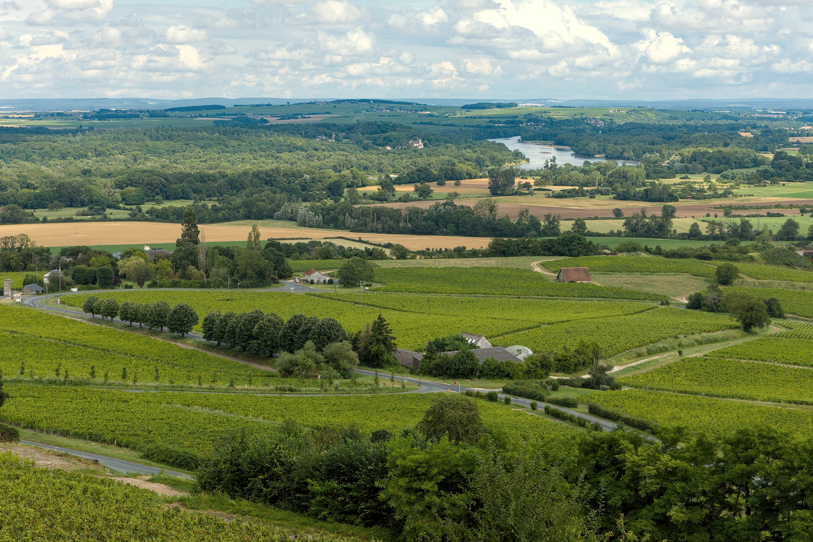

Loire

1 / 9
Loire
schistes et tuffeau
6
domaines
46
vins à la dégustation
4
bulles
26
blanc
2
rosé
12
rouge
2
doux
10
François Reverdy
5
22
Domaine de la Barbinière
6
4
Domaine du Colombier / J.Y Bretaudeau
7
14
Domaine des Noëls
8
25
Chai Berteaud Manceau
9
17
Domaine Jean de Villebois
10
4
L’ABUS D’ALCOOL EST DANGEREUX POUR LA SANTÉ. À CONSOMMER AVEC MODÉRATION.